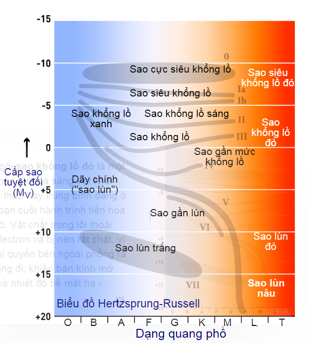
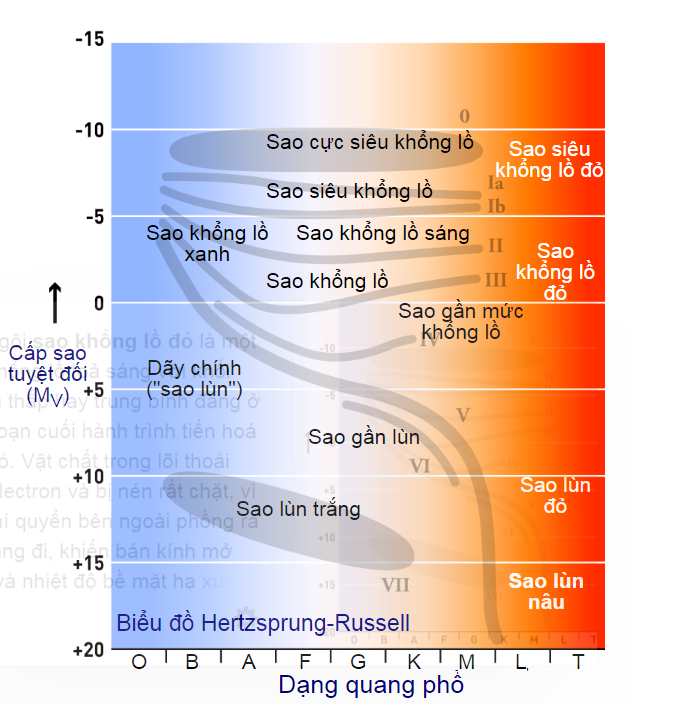

SIÊU SAO KHỔNG LỒ ĐỎ
ĐỊNH NGHĨA
Siêu Sao Khổng Lồ Đỏ (tiếng Anh: Brown dwarf) là các thiên thể dưới sao, có khối lượng dưới mức đủ để duy trì các phản ứng tổng hợp hạt nhân đốt cháy hydro trong lõi, như các ngôi sao thuộc dãy chính, nhưng có bề mặt và phần bên trong hoàn toàn đối lưu, và không có sự khác biệt hóa học theo chiều sâu. Các ngôi sao lùn nâu có khối lượng trong khoảng khối lượng những hành tinh kiểu giữa hành tinh khí khổng lồ và những ngôi sao có khối lượng thấp nhất; giới hạn trên này ở giữa khoảng 75[2] và 80 lần khối lượng Sao Mộc . Hiện tại có một số tranh cãi về tiêu chí nào được sử dụng để định nghĩa sự khác biệt giữa sao lùn nâu với một hành tinh khổng lồ ở các khối lượng sao lùn nâu rất thấp và liệu các ngôi sao lùn nâu ở một số thời điểm của mình có xảy ra phản ứng tổng hợp hạt nhân hay không. Trong bất kỳ trường hợp nào, những sao lùn nâu nặng hơn 13 làm tan chảy deuteri và những ngôi sao trên ~65 cũng làm tan chảy lithi. Những hành tinh duy nhất được phát hiện quay xung quanh các ngôi sao lùn nâu là 2M1207b và MOA-2007-BLG-192Lb.

Siêu Sao Khổng Lồ Đỏ (tiếng Anh: Brown dwarf) là các thiên thể dưới sao, có khối lượng dưới mức đủ để duy trì các phản ứng tổng hợp hạt nhân đốt cháy hydro trong lõi, như các ngôi sao thuộc dãy chính, nhưng có bề mặt và phần bên trong hoàn toàn đối lưu, và không có sự khác biệt hóa học theo chiều sâu. Các ngôi sao lùn nâu có khối lượng trong khoảng khối lượng những hành tinh kiểu giữa hành tinh khí khổng lồ và những ngôi sao có khối lượng thấp nhất; giới hạn trên này ở giữa khoảng 75[2] và 80 lần khối lượng Sao Mộc . Hiện tại có một số tranh cãi về tiêu chí nào được sử dụng để định nghĩa sự khác biệt giữa sao lùn nâu với một hành tinh khổng lồ ở các khối lượng sao lùn nâu rất thấp và liệu các ngôi sao lùn nâu ở một số thời điểm của mình có xảy ra phản ứng tổng hợp hạt nhân hay không. Trong bất kỳ trường hợp nào, những sao lùn nâu nặng hơn 13 làm tan chảy deuteri và những ngôi sao trên ~65 cũng làm tan chảy lithi. Những hành tinh duy nhất được phát hiện quay xung quanh các ngôi sao lùn nâu là 2M1207b và MOA-2007-BLG-192Lb.
ĐẶC ĐIỂM
Những ngôi sao có khối lượng rất thấp được cho là sẽ đối lưu hoàn toàn[5] và vì thế không tích tụ được một lõi heli bên trong, và sẽ cạn kiệt tất cả các nguồn nhiên liệu trước khi trở thành sao đỏ khổng lồ.[6] Những ngôi sao như vậy thường được gọi là sao lùn đỏ. Quãng đời được dự đoán của những ngôi sao như vậy lớn hơn so với tuổi hiện nay của vũ trụ, và vì thế không có những quan sát thực tế về những ngôi sao như vậy đang già đi. Những ngôi sao có khối lượng rất lớn sẽ phát triển thành những ngôi sao siêu khổng lồ di chuyển tới lui theo chiều ngang theo biểu đồ HR, ở kịch điểm phía phải tạo thành các ngôi sao siêu khổng lồ đỏ. Chúng thường kết thúc cuộc đời như những sao siêu mới kiểu II. Nếu ngôi sao nặng hơn 0.4 nhưng nhẹ hơn 2.7 lần khối lượng Mặt Trời, số lượng heli tăng thêm cho lõi bởi phản ứng tổng hợp hydro ngoài lớp vỏ sẽ tạo ra một vụ lóe bùng heli — một vụ nổ heli tổng hợp trong lõi, sau đó ngôi sao sẽ bắt đầu một giai đoạn tổng hợp heli ngắn trước khi bắt đầu một quá trình đi lên khác của nhánh sao đỏ khổng lồ. Các ngôi sao lớn hơn 2.5 lần khối lượng Mặt Trời, nhưng ít hơn khoảng 4 tới 6 lần, đi vào giai đoạn tổng hợp heli nhẹ nhàng hơn. Giai đoạn tổng hợp heli lõi trong cuộc đời một ngôi sao được gọi là nhánh chân trời trong những ngôi sao ít kim loại, chúng được đặt tên như vậy bởi các ngôi sao đó hầu như nằm trên đường chân trời trong Biểu đồ Hertzsprung-Russell của nhiều cụm sao. Những ngôi sao tổng hợp heli nhiều kim loại không nằm trong nhóm chân trời, mà ở trong một cụm (cụm đỏ) trong biểu đồ Hertzsprung-Russell.[7] Thực tế, những ngôi sao đó không phải là những quả cầu lớn màu đỏ với rìa rõ ràng (khi một người ở gần nó) như được hiển thị trên nhiều bức ảnh. Vì mật độ rất thấp những ngôi sao đó có thể không có một quyển sáng rõ mà là hình một ngôi sao dần chuyển thành một 'quầng'
Những ngôi sao có khối lượng rất thấp được cho là sẽ đối lưu hoàn toàn[5] và vì thế không tích tụ được một lõi heli bên trong, và sẽ cạn kiệt tất cả các nguồn nhiên liệu trước khi trở thành sao đỏ khổng lồ.[6] Những ngôi sao như vậy thường được gọi là sao lùn đỏ. Quãng đời được dự đoán của những ngôi sao như vậy lớn hơn so với tuổi hiện nay của vũ trụ, và vì thế không có những quan sát thực tế về những ngôi sao như vậy đang già đi. Những ngôi sao có khối lượng rất lớn sẽ phát triển thành những ngôi sao siêu khổng lồ di chuyển tới lui theo chiều ngang theo biểu đồ HR, ở kịch điểm phía phải tạo thành các ngôi sao siêu khổng lồ đỏ. Chúng thường kết thúc cuộc đời như những sao siêu mới kiểu II. Nếu ngôi sao nặng hơn 0.4 nhưng nhẹ hơn 2.7 lần khối lượng Mặt Trời, số lượng heli tăng thêm cho lõi bởi phản ứng tổng hợp hydro ngoài lớp vỏ sẽ tạo ra một vụ lóe bùng heli — một vụ nổ heli tổng hợp trong lõi, sau đó ngôi sao sẽ bắt đầu một giai đoạn tổng hợp heli ngắn trước khi bắt đầu một quá trình đi lên khác của nhánh sao đỏ khổng lồ. Các ngôi sao lớn hơn 2.5 lần khối lượng Mặt Trời, nhưng ít hơn khoảng 4 tới 6 lần, đi vào giai đoạn tổng hợp heli nhẹ nhàng hơn. Giai đoạn tổng hợp heli lõi trong cuộc đời một ngôi sao được gọi là nhánh chân trời trong những ngôi sao ít kim loại, chúng được đặt tên như vậy bởi các ngôi sao đó hầu như nằm trên đường chân trời trong Biểu đồ Hertzsprung-Russell của nhiều cụm sao. Những ngôi sao tổng hợp heli nhiều kim loại không nằm trong nhóm chân trời, mà ở trong một cụm (cụm đỏ) trong biểu đồ Hertzsprung-Russell.[7] Thực tế, những ngôi sao đó không phải là những quả cầu lớn màu đỏ với rìa rõ ràng (khi một người ở gần nó) như được hiển thị trên nhiều bức ảnh. Vì mật độ rất thấp những ngôi sao đó có thể không có một quyển sáng rõ mà là hình một ngôi sao dần chuyển thành một 'quầng'
MẶT TRỜI KHI TRỞ THÀNH SAO KHỔNG LỒ ĐỎ
Mặt Trời được cho là sẽ trở thành một ngôi sao khổng lồ đỏ không muộn hơn 7,59 tỷ năm nữa.[9] Người ta đã tính toán rằng Mặt Trời sẽ lớn ra đủ để nhấn chìm các quỹ đạo của tất cả các hành tinh phía trong của Hệ Mặt Trời, bao gồm cả Trái Đất.[10][11][12] Tuy nhiên, Mặt Trời sẽ mất một khối lượng lớn khi trở thành sao khổng lồ đỏ, và tất cả các hành tinh, trừ Sao Thủy và Sao Kim có lẽ sẽ thoát được trong các quỹ đạo quay lớn hơn.[13] Số mệnh của Trái Đất còn chưa rõ ràng. Những tính toán trước đây cho rằng Trái Đất sẽ thoát ra với một quỹ đạo lớn hơn, tuy nhiên những nghiên cứu thực hiện năm 2008 cho thấy vì sự tương tác thủy triều giữa Mặt Trời và Trái Đất, có lẽ Trái Đất sẽ bị nuốt chửng dù Mặt Trời mất khối lượng.[14] Trước khi điều này xảy ra; sinh quyển của Trái Đất đã bị phá hủy từ lâu bởi độ tăng ánh sáng liên tục của Mặt Trời khi nguồn cung cấp hydro giảm đi và lõi của nó co lại. Trong vòng vài tỷ năm nguồn năng lượng tăng thêm này sẽ làm bốc hơi các đại dương trên Trái Đất. Hydro từ nước sẽ bay vào không gian và khí quyển Trái Đất sẽ trở nên giống với khí quyển Sao Kim, trong vài tỷ năm nữa, đa phần khí quyển cũng sẽ mất vào vũ trụ;[15] để lại một Trái Đất đã bị đốt cháy, và bề mặt của nó đã tan chảy. 
Mặt Trời được cho là sẽ trở thành một ngôi sao khổng lồ đỏ không muộn hơn 7,59 tỷ năm nữa.[9] Người ta đã tính toán rằng Mặt Trời sẽ lớn ra đủ để nhấn chìm các quỹ đạo của tất cả các hành tinh phía trong của Hệ Mặt Trời, bao gồm cả Trái Đất.[10][11][12] Tuy nhiên, Mặt Trời sẽ mất một khối lượng lớn khi trở thành sao khổng lồ đỏ, và tất cả các hành tinh, trừ Sao Thủy và Sao Kim có lẽ sẽ thoát được trong các quỹ đạo quay lớn hơn.[13] Số mệnh của Trái Đất còn chưa rõ ràng. Những tính toán trước đây cho rằng Trái Đất sẽ thoát ra với một quỹ đạo lớn hơn, tuy nhiên những nghiên cứu thực hiện năm 2008 cho thấy vì sự tương tác thủy triều giữa Mặt Trời và Trái Đất, có lẽ Trái Đất sẽ bị nuốt chửng dù Mặt Trời mất khối lượng.[14] Trước khi điều này xảy ra; sinh quyển của Trái Đất đã bị phá hủy từ lâu bởi độ tăng ánh sáng liên tục của Mặt Trời khi nguồn cung cấp hydro giảm đi và lõi của nó co lại. Trong vòng vài tỷ năm nguồn năng lượng tăng thêm này sẽ làm bốc hơi các đại dương trên Trái Đất. Hydro từ nước sẽ bay vào không gian và khí quyển Trái Đất sẽ trở nên giống với khí quyển Sao Kim, trong vài tỷ năm nữa, đa phần khí quyển cũng sẽ mất vào vũ trụ;[15] để lại một Trái Đất đã bị đốt cháy, và bề mặt của nó đã tan chảy. 